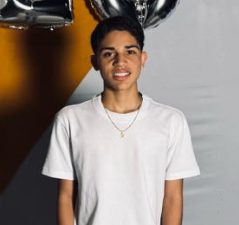
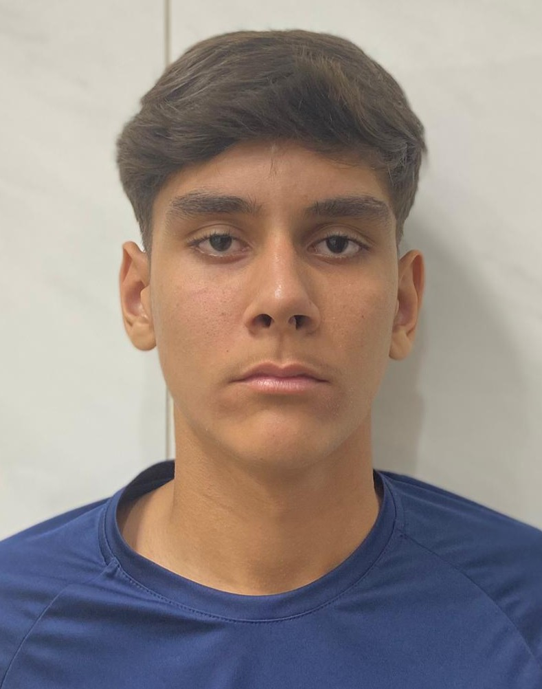
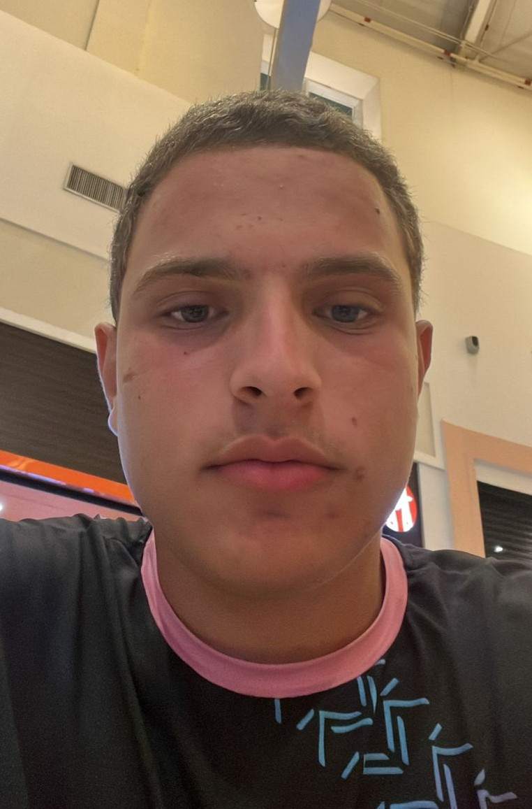

José Ribamar Jr
Goleiro
33 anos
2 jogos
Iago
Goleiro
20 anos
2 jogos
David Novaes
Zagueiro / Volante
26 anos
6 jogos0 gols0 assist.
Daniel Mota
Zagueiro
24 anos
6 jogos0 gols1 assist.
David Peixão
Zagueiro
27 anos
2 jogos0 gols0 assist.
Janio
Zagueiro
28 anos
3 jogos0 gols0 assist.
Leomar Loiola
Zagueiro/Volante
30 anos
3 jogos0 gols0 assist.
Gabriel Antonio
Lateral Direito
23 anos
1 jogos0 gols0 assist.
Michael Davi
Lateral Direito
17 anos
6 jogos0 gols0 assist.
Eduardo Nascimento
Lateral Esquerdo
22 anos
0 jogos0 gols0 assist.
Guilherme Ferreira
Lateral Esquerdo
22 anos
6 jogos0 gols0 assist.
João Paulo
Volante
28 anos
1 jogos0 gols0 assist.
João Marcelo
Volante
21 anos
6 jogos0 gols1 assist.
Chico
Volante / Meia
26 anos
7 jogos0 gols1 assist.
Carlos Henrique
Meia
16 anos
6 jogos0 gols0 assist.
Caio
Meia
20 anos
4 jogos0 gols1 assist.
Ariostocly
Meia Atacante
22 anos
7 jogos2 gols5 assist.
Fabiano
Ponta / Lateral
30 anos
7 jogos2 gols1 assist.
João Pedro Marçal
Ponta
16 anos
4 jogos0 gols0 assist.
Clovis Henrique
Ponta
19 anos
6 jogos3 gols1 assist.
Yokida
Ponta
31 anos
7 jogos1 gol4 assist.
Gabriel Tolintino
Ponta / Atacante
25 anos
6 jogos0 gols0 assist.
André Nunes (Pugmil)
Atacante
25 anos
5 jogos11 gols2 assist.
Técnico de Futebol
Carlos Leandro
33 anos
TEC
Auxiliar Técnico
Diogo Souza
34 anos
AUX
Auxiliar Técnico
Karllos Danyel
25 anos
AUX
Auxiliar Técnico
Warly
21 anos
AUX

Arthur Sousa BileuAtacante

Davi LucasVolante

Gustavo GomesZagueiro
Equipe jovem para a 13ª Liga Paraíso de Futsal. As posições dos atletas de futsal estão indicadas em cada ficha.
Victor Soares
Goleiro
27 anos
Carlos Henrique
Fixo/ala
17 anos
Junior Neiva
Fixo/ala
21 anos
Gabriel Antonio
Ala · Capitão
23 anos
João Pedro Marçal
Ala
16 anos
Victor Gabriel
Ala/pivô
17 anos
Wallas Aires
Ala/pivô
32 anos
Vinicius Jadiel
23 anos
Pivô
Técnico de Futsal
Carlos Leandro
TEC